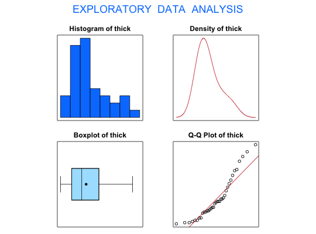

Data for Exercise 6.57
A data frame with 37 observations on the following variable.
a numeric vector
Kitchens, L. J. (2003) Basic Statistics and Data Analysis. Duxbury
str(Greenriv)#> 'data.frame': 37 obs. of 1 variable: #> $ thick: num 10.8 11.7 11 9.9 9.8 9.9 10 10 10.2 10.8 ...#> [1] "thick"#> Size (n) Missing Minimum 1st Qu Mean Median TrMean 3rd Qu #> 37.000 0.000 8.900 9.850 11.073 10.700 11.006 12.150 #> Max. Stdev. Var. SE Mean I.Q.R. Range Kurtosis Skewness #> 15.600 1.813 3.286 0.298 2.300 6.700 -0.195 0.905 #> SW p-val #> 0.003#> #> One-sample Sign-Test #> #> data: thick #> s = 37, p-value = 7.276e-12 #> alternative hypothesis: true median is greater than 7.3 #> 95 percent confidence interval: #> 10.10127 Inf #> sample estimates: #> median of x #> 10.7 #>#> Conf.Level L.E.pt U.E.pt #> Lower Achieved CI 0.9061 10.2000 Inf #> Interpolated CI 0.9500 10.1013 Inf #> Upper Achieved CI 0.9506 10.1000 Infdetach(Greenriv)